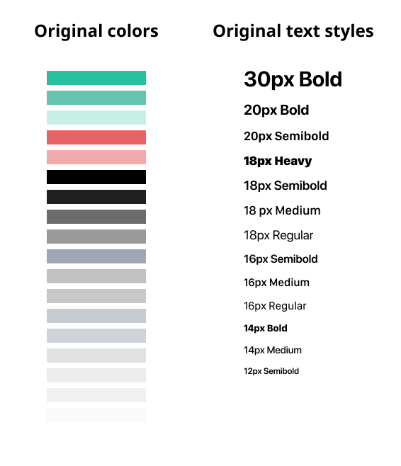
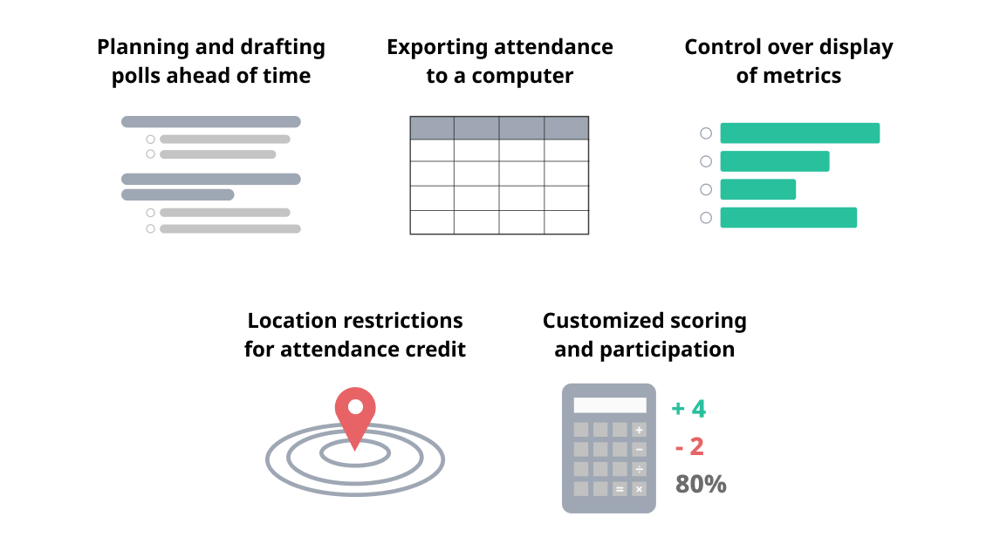

Motivation ❔
At Cornell, many professors utilize polling software such as iClickers or Learning Catalytics in class. They use this often in large lectures where it is hard to interact with everyone in the class. Some of the main motivations for polling during class are:- Taking attendance
- Gauging the class’ understanding of material
- Engaging students during class in an interactive way
The Problem 🧐
Widely used polling software is expensive and/or bulky.
For students, these can be a financial burden and an annoyance to carry around or register for, especially if mutliple classes use different polling methods.
01 Visual Design System 🎨
When I joined the team, we lacked any sort of UI kit. I did an audit of all of the visual assets in the app and realized many inconsistencies, especially in extra colors and text styles.
There were several very similar color and text styles that didn't serve a unique purpose in the design. This created an unclear visual hierarchy and difficult UI for developers to work with.
After categorizing the usages of similar styles, I consolidated them into a system focusing on consistency
and intentionality.
I only kept those that were necessary for differentiating an essential type of content, and linked elements with a
similar hierarchy to the same styles.
From there I updated the old designs using this system!
Finally, taking advantage of Figma's awesome nested components, I created a guide to all of the master components
and their various
instances. This guide can be referenced and reused by our designers, engineers, and marketing team to keep the
Pollo app and brand on point.

This helped us resolve many inconsistencies in our designs/visual hierarchy and organize our files. In the future, we will use this library of styles and assets to design more efficiently and hand off clean and consistent designs to developers!
02 Onboarding 🚢
I also led the creation of an onboarding process for the first time a user makes a poll to walk them through all of their customization options.Particularly, we want users to know that:
- Starting a question without inputting anything will autofill with choices "A", "B", etc.
- Selecting an option marks it as a correct answer.
- You can either save the question to poll later (planning lectures in advance) or start polling on the spot.
Here is the final prototype.
Here is how I got there.
First, I mapped out different orderings and lengths of the onboarding flow to mimic different ways that a professor would create a question and determine the best way to teach the process in the app. They range from concise to very detailed, and vary in the ordering of customization vs. autofill.

I decided on Flow 3 because it was the most comprehensive, highlighting all features without unecessary steps. It also presented the autofill option more as a secondary option to filling out each question. I chose this because prior research showed that the primary use case is for professors planning out questions in advance rather than on the spot during lecture. Still, instructions for autofilling is very important for professors to know how to poll spontaneously or still use Pollo even if they have questions on lecture slides that don't fit within our length/format constraints to display on the app.
Visual explorations
I also explored how to visually highlight both the specific parts of the screen (buttons, text fields, etc.) and the text for onboarding instructions. I used a dark overlay and white outlines and text to emphasize components and provide context.

Option A is more dynamic which brings users' attention to the buttons highlighted. But, the copy is less concise
and the motion
does not leave a good space for a "tap to continue" prompt.
Option B makes the text the primary focus with a heavier weight, fixed position, and simple copy.
I chose A based on feedback that the motion design (see prototype above) provides clearer focus
on where to click
and how to navigate.
Further onboarding designs for the first launch of the app are in progress.
03 Designing Pollo for web 💻
We surveyed 11 professors about how they use polling in their classes to learn how to get Pollo used in classrooms. Here are the key insights we gained.
- Professors need different ways to customize the way they score poll responses. Professors use polling for a mix of participation and grading purposes
- Almost all professors plan questions for a lecture in advance. They usually prepare polls in a slide deck before the lecture.
- A desktop interface is important to professors. Desktops allow better, more visual display of graphs and results.
Our main goal for a web platform is to remove the friction with group controls and exporting attendance that professors faced through the smaller mobile interface. (This semester, we stripped away many group controls on mobile in order to ship a better functioning MVP.)
For web, we plan to start by creating a basic way to download attendance data, as this is an essential part of why professors use polls, and it can only be done feasibly on a desktop. Later, we will build the functionality of the mobile app in addition to these initial web feature requirements:  Pollo Web designs are currently in the ideation and development phase. I will update here for our future process and deliverables 🚀
P.S. Special shoutout to my wonderful co-designer and mentor Amanda Yang and the rest of AppDev for teaching me so much!